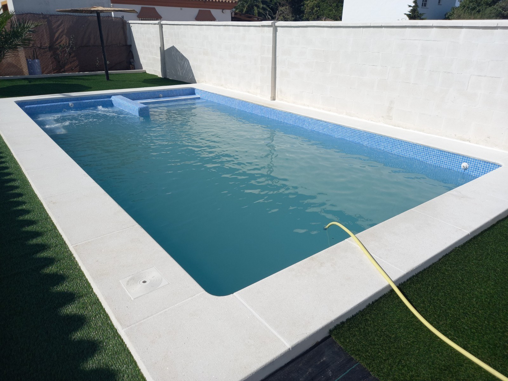
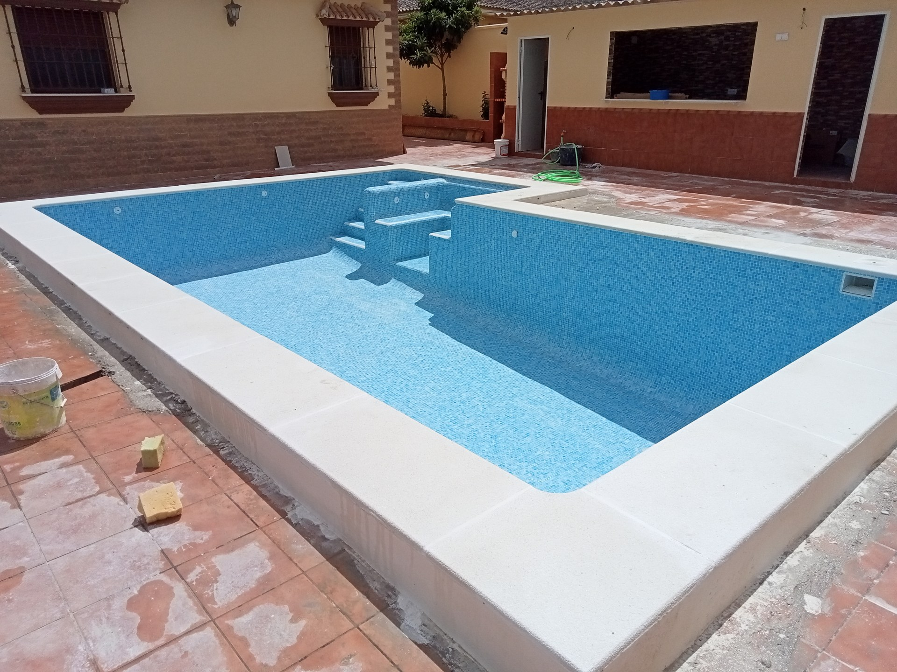
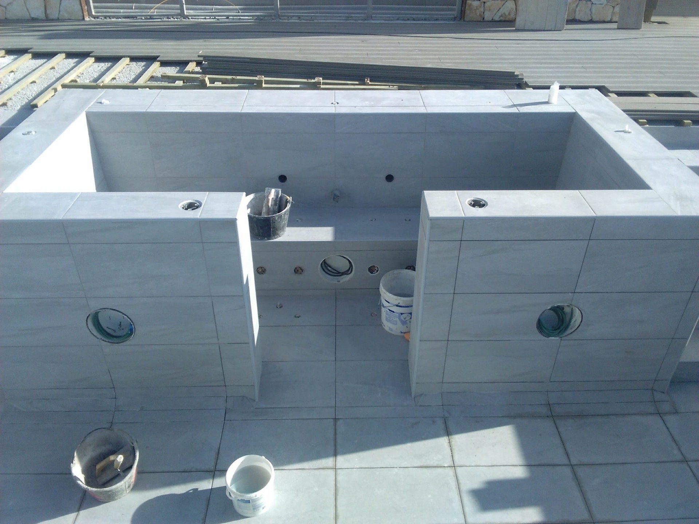
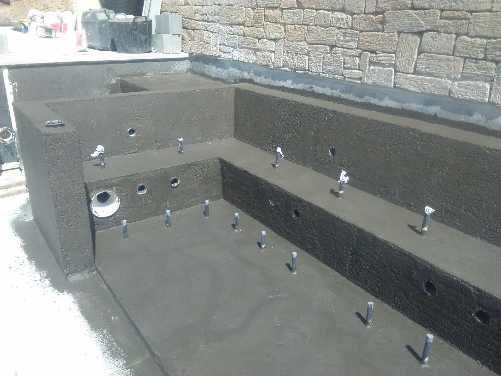
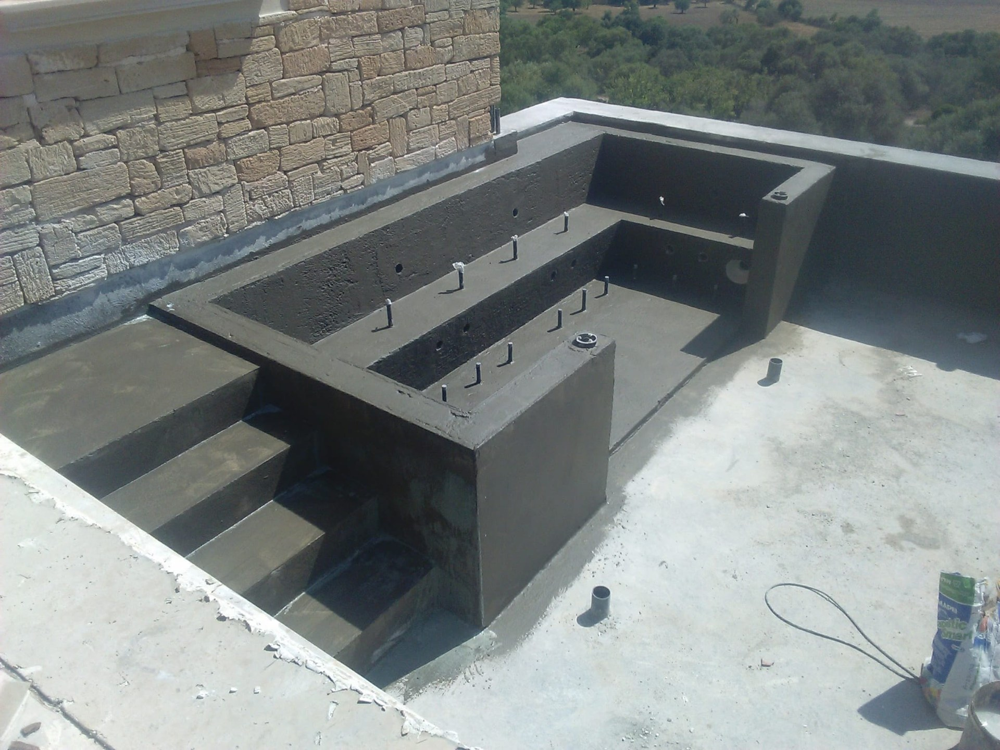

Bancos y accesos
Concretamos el espacio de asiento y la entrada a la zona de descanso. El número de plazas, las medidas y la disposición se estudian dentro del proyecto.
OCM POOL · JACUZZIS E HIDROMASAJE
Jacuzzis de obra y zonas de descanso integradas en el proyecto de piscina. Desde Arcos de la Frontera estudiamos la forma, los bancos, los accesos y las instalaciones para tu espacio en Cádiz.
Consultar mi proyecto ↗
EL DESCANSO TAMBIÉN SE DISEÑA
Un jacuzzi de obra se estudia como un conjunto: espacio para sentarse, acceso al agua, revestimiento y equipos. La forma debe responder al espacio disponible y al uso que tienes previsto.
Podemos valorar una zona integrada en una piscina nueva o estudiar su incorporación dentro de una reforma. En una piscina existente, primero revisamos las posibilidades del vaso y de las instalaciones.
Las fotografías de esta página muestran trabajos identificados en nuestra galería, algunos durante su ejecución. Cada proyecto se define de forma individual.
DEFINIR EL CONJUNTO
Concretamos el espacio de asiento y la entrada a la zona de descanso. El número de plazas, las medidas y la disposición se estudian dentro del proyecto.
Si quieres hidromasaje, valoramos su configuración y el espacio para los equipos y su mantenimiento. La propuesta detalla lo que incluye; no se presupone que todos los jacuzzis tengan las mismas funciones.
Estudiamos el acabado del vaso, los bancos y el borde, así como la relación con el resto de la piscina. Las curvas y las escaleras forman parte de esa elección.
FOTOGRAFÍAS DE TRABAJOS




TU PROYECTO
Envíanos la localidad, las medidas del espacio y fotografías. Indica si buscas construir un jacuzzi junto a una piscina nueva o reformar una instalación existente.
Cuéntanos cuántas plazas te gustaría tener y si buscas una zona de asiento, hidromasaje o valorar otras funciones. Concretaremos los equipos, los accesos y el alcance del presupuesto antes de decidir la solución.
Ver construcción de piscinas ↗ANTES DE DECIDIR
Podemos estudiarlo tras revisar el vaso, el espacio y las instalaciones. No todas las reformas permiten la misma configuración; hace falta valorar cada caso.
Si quieres calentamiento, indícalo al consultar. Su incorporación y los equipos necesarios deben estudiarse y presupuestarse expresamente.
Hay que prever el tratamiento del agua, la limpieza y el acceso a los equipos. Los cuidados concretos dependen de la instalación y de los componentes elegidos.
Esta página presenta trabajos de obra y propuestas a medida, no un catálogo de equipos prefabricados. Prepararemos la valoración a partir de tu espacio y de las funciones que quieras incluir.
EMPECEMOS POR TU IDEA
Envíanos la localidad, fotografías y medidas aproximadas. Te ayudamos a definir qué trabajos conviene estudiar para tu piscina.
Pedir presupuesto por WhatsApp ↗Ver todos los complementos ↗